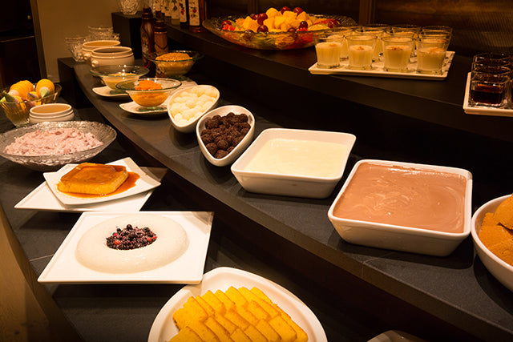
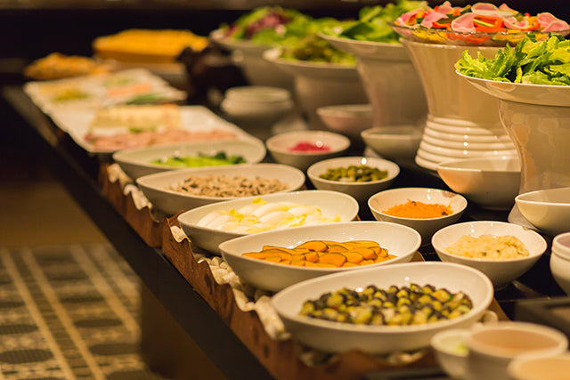
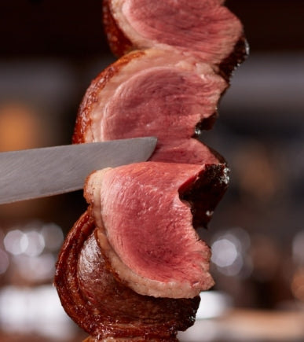

山田凜 / TOKIUM 26卒
大学4年間アルバイトしていたお店



ブラジル発祥のロティサリー料理。大きな串に刺した肉をじっくり焼き上げ、テーブルで目の前で切り分けてくれる豪快なスタイル。
メインダイニング・カウンター席・セラーサイドの3ゾーンで構成。シュラスコマシンが見える席からは迫力の調理風景も楽しめる。
シュラスコにサラダ・デザートビュッフェが付く。ワインリストも豊富で、肉とのペアリングも楽しめる。
📍 アクセス 表参道駅 徒歩2分 東京都渋谷区神宮前4-3-2 TOKYUREIT表参道スクエアB1